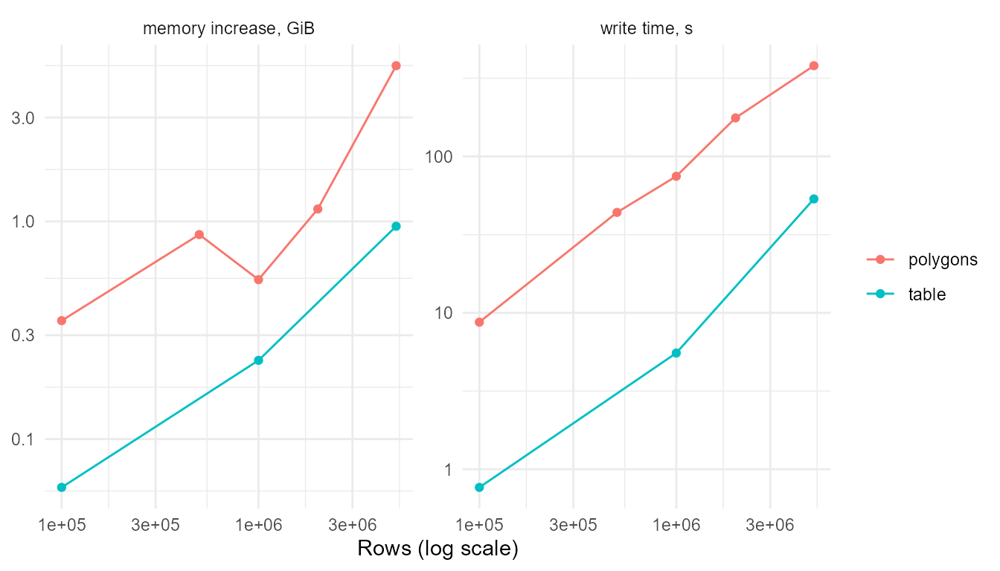

Benchmark: how writes grow with the data
Source:vignettes/articles/benchmark-scale.Rmd
benchmark-scale.RmdThis article reads stored results; it does not run the benchmark. The
script is bench/scale.R; its code is shown below as it was
run.
Question
How do the time, the memory and the staging disk of
store_write() grow with the number of rows, from 1e5 to 5e6
polygons? Tables are measured alongside for comparison.
Setup
env <- scale[1, grep("^env_", names(scale))]
knitr::kable(data.frame(
item = sub("^env_", "", names(env)),
value = vapply(env, function(v) as.character(v[[1]]), character(1)),
row.names = NULL
))| item | value |
|---|---|
| date | 2026-11-21 09:55:05 |
| commit | f00effc |
| r_version | 4.6.2 |
| os | Windows 10 x64 |
| cpu | Intel64 Family 6 Model 142 Stepping 12, GenuineIntel |
| cores | 8 |
| ram_gb | 31.8 |
| storage | ssd |
| packages | {“rcs”:“0.0.0.9000”,“arrow”:“26.0.1”,“sf”:“1.1.3”,“h3o”:“0.3.0”,“h3jsr”:“1.3.1”,“terra”:“1.9.50”,“duckdb”:“2.0.0”,“bit64”:“4.8.6”} |
rcs_sim_polygons() written with
partition = "h3" and rcs_sim_table() written
with its key and partition = "year", into a new local store
for every repetition, one geocoding worker. Each size runs in its own R
process (a mirai daemon) that makes the data and writes it; the
benchmark’s own process samples the daemon’s resident memory and the
size of the staging folder every 0.2 s during each write. Memory is
reported as the increase of resident memory during the write over the
memory held just before it (the data x and the loaded
packages), and against the size of x in memory
(object.size()). Steps are timed as in
benchmark-write.Rmd.
root <- normalizePath(Sys.getenv("RCS_BENCH_ROOT", "."), winslash = "/")
devtools::load_all(root, quiet = TRUE)
source(file.path(root, "bench", "harness.R"))
results_dir <- file.path(root, "bench", "results")
rlang::check_installed(c("h3o", "bench", "mirai", "ps"))
sizes <- as.numeric(strsplit(Sys.getenv("RCS_BENCH_SIZES", "1e5;5e5;1e6;2e6;5e6"), ";")[[1]])
kinds <- strsplit(Sys.getenv("RCS_BENCH_KINDS", "polygons;table"), ";")[[1]]
reps_for <- function(n) {
given <- Sys.getenv("RCS_BENCH_REPS", "")
if (nzchar(given)) {
return(as.integer(given))
}
if (n <= 1e6) 5L else if (n <= 2e6) 3L else 1L
}
work <- file.path(tempdir(), "rcs-bench-scale")
unlink(work, recursive = TRUE)
dir.create(work, recursive = TRUE)
env <- bench_env(storage = "ssd")
env$commit <- tryCatch(
system2("git", c("-C", root, "rev-parse", "--short", "HEAD"), stdout = TRUE),
error = function(e) NA_character_
)# Code run inside the daemon: load the package, wrap the step functions,
# make the data, write once.
worker_code <- quote({
devtools::load_all(root, quiet = TRUE)
options(rcs.quiet = TRUE, rcs.workers = 1)
step_of <- c(
geo_encode = "geocode", sort_rows = "sort", partition_plan = "sort",
files_write_parquet = "serialise", md5_file = "hash", check_staged = "check",
be_put = "upload", be_md5 = "verify", location_refresh = "catalogs",
location_write = "catalogs", history_read = "catalogs", catalog_token = "catalogs"
)
step_state <- new.env()
step_state$stack <- character()
step_state$time <- stats::setNames(numeric(length(unique(step_of))), unique(step_of))
step_wrap <- function(fn, step) {
original <- get(fn, envir = asNamespace("rcs"))
force(step)
function(...) {
start <- bench::hires_time()
step_state$stack <- c(step_state$stack, step)
on.exit({
took <- bench::hires_time() - start
depth <- length(step_state$stack)
step_state$stack <- step_state$stack[-depth]
step_state$time[[step]] <- step_state$time[[step]] + took
if (depth > 1) {
parent <- step_state$stack[[depth - 1]]
step_state$time[[parent]] <- step_state$time[[parent]] - took
}
})
original(...)
}
}
ns <- asNamespace("rcs")
for (fn in names(step_of)) {
if (bindingIsLocked(fn, ns)) unlockBinding(fn, ns)
assign(fn, step_wrap(fn, step_of[[fn]]), envir = ns)
}
make_data <- function(kind, n) {
start <- bench::hires_time()
x <<- if (kind == "table") rcs_sim_table(n, seed = 1) else rcs_sim_polygons(n, seed = 1)
gc()
list(seconds = as.numeric(bench::hires_time() - start), x_bytes = as.numeric(utils::object.size(x)))
}
write_once <- function(kind, store, stage) {
unlink(c(store, stage), recursive = TRUE)
dir.create(stage, recursive = TRUE)
options(rcs.staging_dir = stage)
st <- store_connect(store, create = TRUE)
gc()
step_state$time[] <- 0
start <- bench::hires_time()
if (kind == "table") {
store_write(st, x, "sales/daily",
title = "Daily sales", description = "Simulated daily sales.",
key = c("shop_id", "date", "product"), partition = "year",
max_files = 100L
)
} else {
store_write(st, x, "shapes/polygons",
title = "Polygons", description = "Simulated polygons in open ocean.",
partition = "h3"
)
}
seconds <- as.numeric(bench::hires_time() - start)
files <- st$primary$files
c(
list(seconds = seconds, files = nrow(files), store_bytes = sum(as.numeric(files$bytes))),
stats::setNames(as.list(step_state$time), paste0("step_", names(step_state$time), "_s"))
)
}
})# Wait for a mirai while sampling the daemon's resident memory and the size
# of the staging folder.
folder_bytes <- function(dir) {
paths <- list.files(dir, recursive = TRUE, full.names = TRUE, all.files = TRUE)
if (length(paths) == 0) 0 else sum(file.size(paths), na.rm = TRUE)
}
watch <- function(m, handle, stage = NULL) {
peak_rss <- 0
peak_stage <- 0
while (mirai::unresolved(m)) {
rss <- tryCatch(ps::ps_memory_info(handle)[["rss"]], error = function(e) NA_real_)
peak_rss <- max(peak_rss, rss, na.rm = TRUE)
if (!is.null(stage)) peak_stage <- max(peak_stage, folder_bytes(stage))
Sys.sleep(0.2)
}
value <- m$data
if (mirai::is_error_value(value)) {
cli::cli_abort("The write failed in the daemon: {as.character(value)}")
}
list(value = value, peak_rss = peak_rss, peak_stage = peak_stage)
}run_size <- function(kind, n) {
# cleanup = FALSE: the data made by one task stay for the next ones
mirai::daemons(1, dispatcher = FALSE, cleanup = FALSE, .compute = "scale")
on.exit(mirai::daemons(0, .compute = "scale"))
ready <- mirai::mirai(
{
assign("root", root, envir = globalenv())
eval(worker_code, globalenv())
Sys.getpid()
},
worker_code = worker_code, root = root, .compute = "scale"
)[]
if (mirai::is_error_value(ready)) cli::cli_abort("The daemon did not start: {as.character(ready)}")
handle <- ps::ps_handle(ready)
made <- watch(mirai::mirai(make_data(kind, n), kind = kind, n = n, .compute = "scale"), handle)
rows <- list()
for (rep in seq_len(reps_for(n))) {
store <- file.path(work, "store")
stage <- file.path(work, "stage")
before <- ps::ps_memory_info(handle)
w <- watch(
mirai::mirai(write_once(kind, store, stage), kind = kind, store = store, stage = stage, .compute = "scale"),
handle, stage
)
after <- ps::ps_memory_info(handle)
rows[[rep]] <- tibble::tibble(
kind = kind, rows = n, rep = rep, reps = reps_for(n),
sim_s = made$value$seconds, x_bytes = made$value$x_bytes,
sim_peak_rss_bytes = made$peak_rss,
rss_before_bytes = before[["rss"]],
peak_rss_bytes = w$peak_rss,
peak_wset_before_bytes = before[["peak_wset"]],
peak_wset_after_bytes = after[["peak_wset"]],
staging_peak_bytes = w$peak_stage,
!!!w$value
)
cli::cli_inform("{kind} {format(n, scientific = TRUE)} repetition {rep}: {round(w$value$seconds, 1)} s.")
}
unlink(file.path(work, c("store", "stage")), recursive = TRUE)
do.call(rbind, rows)
}
# Each size is saved as soon as it is done, merged into the stored results:
# rows of earlier runs of other sizes keep their own environment columns.
save_rows <- function(new_rows) {
new_rows$seconds_per_1e6_rows <- 1e6 * new_rows$seconds / new_rows$rows
new_rows$rss_increase_bytes <- new_rows$peak_rss_bytes - new_rows$rss_before_bytes
new_rows$memory_over_x <- new_rows$rss_increase_bytes / new_rows$x_bytes
path <- file.path(results_dir, "scale.parquet")
if (!file.exists(path)) {
return(bench_save(new_rows, "scale", env = env, dir = results_dir))
}
tagged <- env
names(tagged) <- paste0("env_", names(tagged))
new_rows <- cbind(new_rows, tagged[rep(1L, nrow(new_rows)), ])
# read without memory mapping: Windows cannot overwrite a mapped file
old <- tibble::as_tibble(arrow::read_parquet(path, mmap = FALSE))
old <- old[!paste(old$kind, old$rows) %in% paste(new_rows$kind, new_rows$rows), names(new_rows)]
out <- rbind(old, new_rows)
out <- out[order(out$kind, out$rows, out$rep), ]
arrow::write_parquet(tibble::as_tibble(out), path)
cli::cli_inform("Saved {nrow(out)} rows to {.path {path}}.")
}
for (kind in kinds) {
for (n in sizes) {
if (kind == "table" && !n %in% c(1e5, 1e6, 5e6)) next
cli::cli_inform("Scale: {kind}, {format(n, scientific = TRUE)} rows.")
save_rows(run_size(kind, n))
}
}
unlink(work, recursive = TRUE)Results
knitr::kable(
by_size[c("kind", "rows", "reps", "median_s", "min_s", "max_s", "s_per_1e6", "geocode_s", "sort_s", "serialise_s", "check_s")],
row.names = FALSE, digits = 1, format.args = list(big.mark = ",")
)| kind | rows | reps | median_s | min_s | max_s | s_per_1e6 | geocode_s | sort_s | serialise_s | check_s |
|---|---|---|---|---|---|---|---|---|---|---|
| polygons | 1e+05 | 3 | 8.7 | 7.8 | 9.3 | 87.2 | 5.7 | 0.0 | 0.5 | 0.8 |
| polygons | 5e+05 | 5 | 43.9 | 43.3 | 52.6 | 87.7 | 30.5 | 6.5 | 1.2 | 3.1 |
| polygons | 1e+06 | 3 | 74.7 | 72.7 | 79.1 | 74.7 | 66.1 | 0.1 | 2.1 | 2.5 |
| polygons | 2e+06 | 3 | 176.3 | 173.1 | 179.3 | 88.2 | 131.5 | 25.2 | 4.0 | 7.7 |
| polygons | 5e+06 | 1 | 380.3 | 380.3 | 380.3 | 76.1 | 342.3 | 0.6 | 10.1 | 9.2 |
| table | 1e+05 | 3 | 0.8 | 0.6 | 1.2 | 7.7 | 0.0 | 0.0 | 0.2 | 0.2 |
| table | 1e+06 | 3 | 5.5 | 5.0 | 5.7 | 5.5 | 0.0 | 0.5 | 1.6 | 1.8 |
| table | 5e+06 | 1 | 53.5 | 53.5 | 53.5 | 10.7 | 0.0 | 3.6 | 8.1 | 33.9 |
s_per_1e6 is the median time per million rows; constant
values mean linear growth.
knitr::kable(
by_size[c("kind", "rows", "x_gb", "sim_peak_gb", "rss_before_gb", "peak_gb", "increase_gb", "memory_over_x", "peak_any_gb", "staging_gb", "store_gb", "files")],
row.names = FALSE, digits = 2, format.args = list(big.mark = ",")
)| kind | rows | x_gb | sim_peak_gb | rss_before_gb | peak_gb | increase_gb | memory_over_x | peak_any_gb | staging_gb | store_gb | files |
|---|---|---|---|---|---|---|---|---|---|---|---|
| polygons | 1e+05 | 0.07 | 0.44 | 0.44 | 0.79 | 0.35 | 4.78 | 0.93 | 0.01 | 0.01 | 29 |
| polygons | 5e+05 | 0.37 | 1.19 | 0.74 | 1.60 | 0.87 | 2.34 | 2.19 | 0.05 | 0.05 | 29 |
| polygons | 1e+06 | 0.74 | 2.15 | 1.95 | 2.49 | 0.54 | 0.73 | 3.33 | 0.10 | 0.10 | 29 |
| polygons | 2e+06 | 1.48 | 4.13 | 3.38 | 4.52 | 1.14 | 0.77 | 5.91 | 0.19 | 0.19 | 29 |
| polygons | 5e+06 | 3.71 | 10.09 | 5.60 | 10.79 | 5.19 | 1.40 | 10.79 | 0.48 | 0.48 | 29 |
| table | 1e+05 | 0.02 | 0.25 | 0.25 | 0.31 | 0.06 | 2.70 | 0.32 | 0.00 | 0.00 | 2 |
| table | 1e+06 | 0.22 | 0.51 | 0.48 | 0.71 | 0.23 | 1.04 | 0.71 | 0.03 | 0.03 | 15 |
| table | 5e+06 | 1.11 | 1.53 | 1.38 | 2.33 | 0.95 | 0.86 | 2.33 | 0.13 | 0.13 | 73 |
Sizes in GiB. Memory columns are those of the first repetition, which
starts in a process that has only made the data:
rss_before_gb is the resident memory just before the write,
peak_gb the largest resident memory during it,
increase_gb the difference and memory_over_x
that difference divided by x_gb. peak_any_gb
is the largest resident memory over all repetitions (R keeps freed
memory, so later repetitions start higher), and sim_peak_gb
that of making the data with rcs_sim_*().
staging_gb is the largest size of the staging folder during
a write, store_gb the size of the written files.
library(ggplot2)
long <- rbind(
data.frame(kind = by_size$kind, rows = by_size$rows, measure = "write time, s", value = by_size$median_s),
data.frame(kind = by_size$kind, rows = by_size$rows, measure = "memory increase, GiB", value = by_size$increase_gb)
)
ggplot(long, aes(x = rows, y = value, colour = kind)) +
geom_line() +
geom_point() +
facet_wrap(~measure, scales = "free_y") +
scale_x_log10() +
scale_y_log10() +
labs(x = "Rows (log scale)", y = NULL, colour = NULL) +
theme_minimal()
Verdict
- Time grows about linearly: from 87 to 76 seconds per million polygons between 100,000 and 5,000,000 rows; geocoding stays the largest part (90% at 5,000,000 rows); the choice of the H3 partition resolution, counted in “sort”, works on the distinct cells and takes 0.1%.
- Tables grow linearly too, but the serialization check grows with the number of files: it reads one whole row group of every file (about half a second each for the simulated table) before it compares the sampled rows, so it took 63% of the write of 5,000,000 rows in 73 files.
- Memory: from 1e6 rows on, a polygon write needs at most 1.40 times
the size of
xon top ofxitself (5.19 GiB for 5,000,000 polygons of 3.71 GiB), and a table write at most 1.04 times. Small writes show larger ratios (up to 4.8) because fixed costs (Arrow buffers, loaded code) weigh more. - Staging disk is about the size of the written files (the largest staging folder was 0.48 GiB for files of 0.48 GiB): the files are staged once and copied.
Limits
- One machine with 31.8 GB of RAM. The sizes 1e5, 1e6 and 5e6 were
measured again on the quiet machine after the speed fixes of the fourth
wave, with three, three and one repetitions (column
reps); the rows of 5e5 and 2e6 polygons are those of the first run, before those fixes and on a machine that ran other agents, and are kept for the shape of the curve. - Resident memory is sampled every 0.2 s, so a peak shorter than that can be missed; R also returns freed memory to the system late, so the “before” level of later repetitions is higher than that of the first.
- Local store only; the upload to a cloud bucket adds time but no memory (files are streamed from the staging folder).